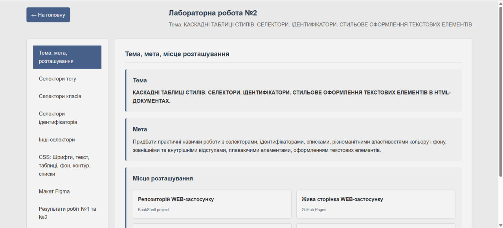
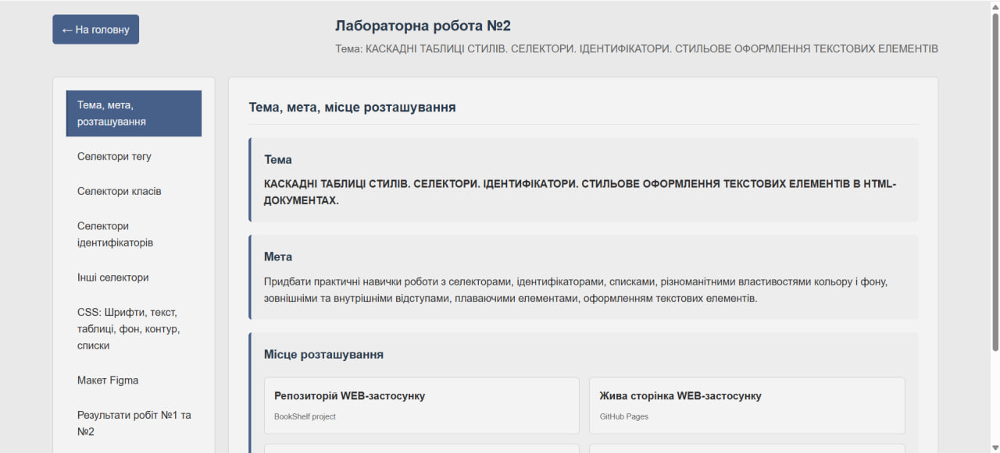

Тема, мета, місце розташування
Тема
КАСКАДНІ ТАБЛИЦІ СТИЛІВ. СЕЛЕКТОРИ. ІДЕНТИФІКАТОРИ. СТИЛЬОВЕ ОФОРМЛЕННЯ ТЕКСТОВИХ ЕЛЕМЕНТІВ В HTML-ДОКУМЕНТАХ.
Мета
Придбати практичні навички роботи з селекторами, ідентифікаторами, списками, різноманітними властивостями кольору і фону, зовнішніми та внутрішніми відступами, плаваючими елементами, оформленням текстових елементів.
Селектори тегу
Застосування селекторів тегу у проекті BookShelf
HTML-код з проекту BookShelf:
CSS-код (стилізація тегів з style.css):
Селектори класів
Застосування селекторів класів у проекті BookShelf
HTML-код з класами:
CSS-код (стилізація класів з style.css):
Селектори ідентифікаторів
Застосування селекторів ідентифікаторів у проекті BookShelf
HTML-код з ідентифікаторами:
CSS-код (стилізація ідентифікаторів з style.css):
Інші селектори
Застосування різних типів селекторів
1. Універсальний селектор (*)
Застосовується до всіх елементів на сторінці.
3. Дочірній селектор (>)
Застосовується до прямих дочірніх елементів.
4. Псевдокласи
Застосовуються для стилізації станів елементів.
5. Групування селекторів (,)
Застосовує стилі до кількох елементів одночасно.
CSS: Шрифти, текст, таблиці, фон, контур, списки
Стильове оформлення текстових елементів у BookShelf
1. Шрифти та текст (з style.css):
2. Контури (border) з style.css:
3. Фон (background) з style.css:
4. CSS для таблиць з style.css:
5. CSS для списків з style.css:
6. Відступи (padding та margin) з style.css:
Макет в Figma звітного HTML-документа
Проектування інтерфейсу у Figma
Результати лабораторних робіт №1 та №2
Об'єднання результатів обох лабораторних робіт
Досягнення лабораторної роботи №1:
- Створено веб-застосунок BookShelf для керування персональною бібліотекою
- Розроблено HTML-структуру з таблицями, формами, списками
- Налаштовано Git репозиторій та GitHub Pages
- Створено звітний HTML-документ
Досягнення лабораторної роботи №2:
- Застосовано CSS для стилізації веб-застосунку BookShelf
- Використано різні типи селекторів: тегів, класів, ідентифікаторів
- Реалізовано адаптивний дизайн з медіа-запитами
- Додано інтерактивність через CSS переходи та анімації
- Створено Figma макет для звітного документу
 

Репозиторії та живі сторінки
Висновки до лабораторної роботи №2
Висновки
Під час виконання лабораторної роботи №2 було успішно освоєно роботу з каскадними таблицями стилів (CSS) та різними типами селекторів. Основним практичним результатом стало створення повноцінного стилізованого веб-застосунку BookShelf для керування персональною бібліотекою.
Ключові навички, отримані в ході роботи:
- Робота з селекторами CSS: Навчилась застосовувати різні типи селекторів - тегів, класів, ідентифікаторів, а також комбіновані селектори, селектори атрибутів та універсальний селектор.
- Стилізація текстових елементів: Опанувала техніки оформлення тексту: роботу з шрифтами, кольорами, відступами, контурами та фоном.
- Адаптивний веб-дизайн: Реалізувала адаптивну верстку за допомогою медіа-запитів, що дозволяє коректне відображення на різних пристроях.
- Сучасні CSS-технології: Застосувала Flexbox для створення гнучких макетів, CSS переходи для анімацій, градієнти для фонів.
- Інструменти розробника: Навчилась використовувати Figma для проектування інтерфейсів та GitHub для контролю версій та хостингу.
Загальний висновок: Виконання лабораторної роботи №2 дозволило перейти від створення базової HTML-структури до повноцінного стилізованого веб-застосунку з професійним дизайном. Отримані знання про CSS селектори, каскадування та спадкування стилів складають фундамент для подальшого вивчення веб-розробки та створення складних інтерфейсів.
Результатом роботи є не лише функціональний веб-застосунок BookShelf, а й структурований звітний документ, що демонструє всі етапи розробки та отримані навички.